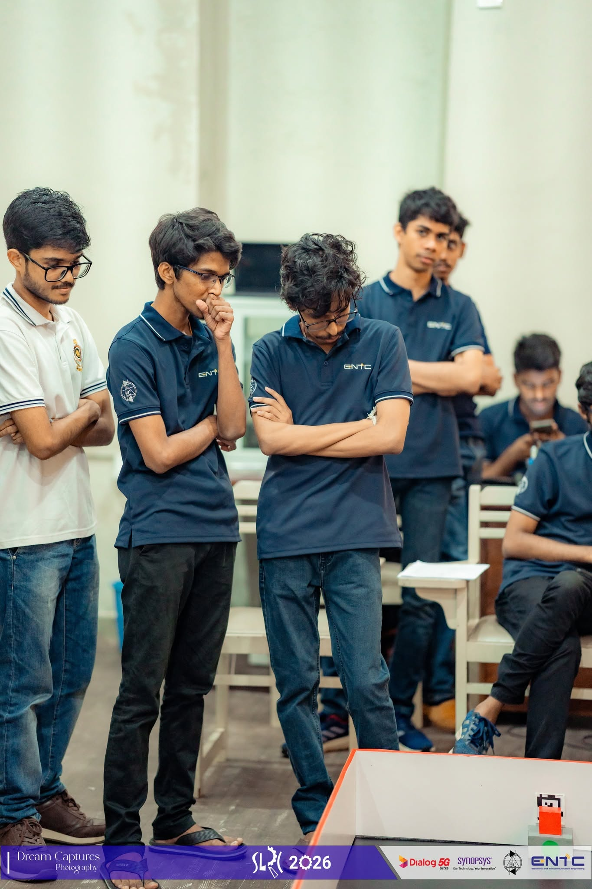
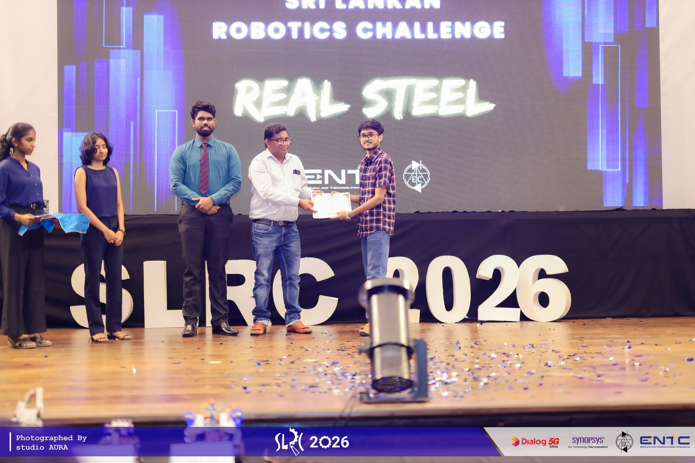

SLRC 2026
CompetitionWorked on the virtual task and got hands-on experience working with APIs. Enhanced networking knowledge with practical exposure throughout the competition phases.
Team: Thiviru, Hasindu, Sakhila, Dananjaya, Jaindu